Sites web
Sites vitrines et boutiques en ligne sur mesure : rapides, adaptés au mobile et optimisés pour le référencement.
Qu'est-ce qu'Idiz Tech peut faire pour mon entreprise ?
Nous concevons des sites web, des applications, des solutions IT et d'intelligence artificielle sur mesure. Rapides, élégants et pensés pour faire grandir votre activité.
Une équipe compacte, des outils modernes et une obsession du détail. Du premier croquis à la mise en ligne, nous restons à vos côtés.
Sites vitrines et boutiques en ligne sur mesure : rapides, adaptés au mobile et optimisés pour le référencement.
Applications web et mobiles, back-offices et API connectés à vos outils métier.
Installation, maintenance et dépannage de votre parc informatique et de votre réseau.
Audit, choix des outils et automatisation de vos processus.
Assistants et chatbots, automatisation des tâches répétitives, recherche dans vos documents. Nous intégrons l'IA dans vos outils et dans votre société, de manière sûre et concrète.





Un processus en quatre étapes, transparent du début à la fin.
Nous comprenons vos objectifs, vos contraintes et votre public.
Maquettes épurées, validées ensemble avant la moindre ligne de code.
Un code propre, testé et pensé pour durer.
Mise en ligne, formation et suivi après livraison.
Depuis 2021, Idiz Tech accompagne des indépendants, des PME, de grandes entreprises et des institutions publiques dans leurs projets digitaux. Pas de jargon, pas de surprise : un interlocuteur unique et des résultats concrets.
Chaque projet est différent. Après un premier échange, nous vous envoyons un devis clair et détaillé, sans frais cachés.
Cela dépend de l'ampleur du projet : un site vitrine va beaucoup plus vite qu'une application sur mesure. Nous fixons ensemble un planning réaliste dès le départ, avec des étapes de validation.
Nous restons disponibles pour la maintenance, les mises à jour, les sauvegardes, les évolutions et le support technique. Vous gardez un interlocuteur unique qui connaît votre projet.
Nous partons de vos besoins concrets : répondre plus vite à vos clients, automatiser des tâches répétitives, retrouver l'information dans vos documents. Nous choisissons des outils fiables et veillons à la confidentialité de vos données.
Oui. Basés à Bruxelles, nous travaillons en français, en néerlandais et en anglais, avec des indépendants, des PME, de grandes entreprises et des institutions publiques.
Un site, une application, un souci informatique ? Écrivez-nous, nous répondons sous 24 heures.